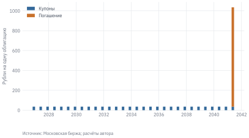

Облигация обещает выплаты, но не обещает неизменную рыночную цену. Одна и та же последовательность купонов может стоить существенно по-разному при разных ставках дисконтирования. Покупателю поэтому нужны как минимум три ответа: сколько денег он платит сейчас, какие выплаты получает в будущем и сколько может потерять при продаже до погашения.
В этой главе мы построим небольшой практикум на четырёх ОФЗ с постоянным купонным доходом — ОФЗ-ПД. Начнём с биржевой котировки, восстановим денежные потоки и посчитаем доходность. Затем проверим процентный риск двумя способами: приблизительно через дюрацию и точно через повторное дисконтирование выплат.
УведомлениеВ этом практикуме
Переводим чистую цену в процентах номинала в сумму с НКД в рублях.
Считаем эффективную доходность по реальным датам и суммам выплат.
Измеряем дюрацию, выпуклость и рублёвый риск одного базисного пункта.
Сопоставляем доходность купонной бумаги с бескупонной кривой.
Проверяем сценарии изменения ставок и обсуждаем применение к собственной позиции.
Данные: отдельный снимок data/bonds/ на 30.09.2026: ОФЗ 26232, 26236, 26243 и 26238. Источник — Московская биржа. Доступ к хранилищу для выполнения примеров не нужен.
Предпосылки: известные купоны и погашение всего номинала одним платежом; годовая эффективная ставка, ACT/365F. Дата оценки совпадает с датой котировки — учебная модель T+0. Налоги и комиссии здесь не включены. Флоатеры, линкеры и облигации с офертами требуют расширения модели.
13.1 Чистая и грязная цена
Котировка облигации обычно выражена в процентах от непогашенного номинала. При этом накопленный купонный доход — НКД — задаётся в рублях на одну бумагу. Их нельзя складывать без приведения к одной единице измерения.
где \(Q_{\mathrm{clean}}\) — котировка, \(F\) — номинал, \(A\) — НКД. Грязная цена — стоимость облигации вместе с накопленным купонным доходом. Комиссия брокера в эту формулу ещё не входит.
Для выбранного выпуска получаем 50,740% от номинала 1 000 руб. плюс НКД 23,15 руб. Итого — 530,55 руб. на одну облигацию.
НКД компенсирует продавцу часть купона, накопленную за время владения после предыдущей выплаты. Внутри обычного купонного периода его можно приблизить пропорционально прошедшим дням:
\[
A_{\mathrm{linear}}=C\frac{d-d_0}{d_1-d_0},
\]
где \(C\) — сумма купона, \(d_0,d_1\) — границы периода. Это полезная проверка, но условия начисления и округления определяются выпуском. Для оценки мы используем наблюдаемое поле ACCINT, а не заменяем его приближением.
В день выплаты наш расчёт исключает платёж, уже пришедшийся на дату оценки, и рассматривает только будущие поступления. Для реальной сделки отдельно проверяют дату расчётов и право на ближайший купон: простого сравнения с датой выплаты может быть недостаточно.
13.2 Восстановление денежных потоков
ОФЗ-ПД платит купоны, а в конце срока возвращает номинал. Последняя выплата поэтому состоит из двух частей. Номинал следует прибавить один раз — в дату погашения, а не к каждому купону.
Код
def cashflows_for(ticker): c = data.load_bond_coupons(ticker) p = data.load_bond_principal(ticker) c = c.loc[c.payment_date > valuation_date] p = p.loc[p.payment_date > valuation_date]if c.empty or p.empty or c.amount.isna().any() or p.amount.isna().any():raiseValueError("Неизвестные или отсутствующие выплаты") payments = ( c[["payment_date", "amount"]].rename(columns={"amount": "coupon"}) .merge( p[["payment_date", "amount"]].rename(columns={"amount": "principal"}), on="payment_date", how="left", validate="one_to_one" ) .fillna({"principal": 0.0}) .sort_values("payment_date") )if payments.principal.sum() != p.amount.sum():raiseValueError("Не все погашения попали в график") payments["amount"] = payments.coupon + payments.principal flows = [ bonds.CashFlow(row.payment_date.date(), row.amount)for row in payments.itertuples() ]return flows, paymentsflows, payments = cashflows_for(ticker)print(payments.tail(4).to_string(index=False))#> payment_date coupon principal amount#> 2039-11-16 35.4 0.0 35.4#> 2040-05-16 35.4 0.0 35.4#> 2040-11-14 35.4 0.0 35.4#> 2041-05-15 35.4 1000.0 1035.4
Снимок при выгрузке проверяется на полноту купонных периодов, известность сумм и единственное погашение номинала. Пропуск суммы не означает нулевой купон. В таком случае цена и доходность не должны рассчитываться как будто выплаты нет.
Код
fig, ax = plt.subplots()ax.bar(payments.payment_date, payments.coupon, width=65, label="Купоны")ax.bar(payments.payment_date, payments.principal, bottom=payments.coupon, width=65, label="Погашение")ax.set_ylabel("Рубли на одну облигацию")ax.legend()plot.source(ax, "Московская биржа; расчёты автора", offset=35)plt.show()

Рисунок 13.1: Будущие выплаты ОФЗ 26238: купоны и возврат номинала
13.3 Доходность как решение уравнения
Доходность к погашению \(y\) — ставка, при которой приведённая стоимость выплат совпадает с грязной ценой:
Здесь \(y\) записана в долях: 0,15 означает 15% годовых. Мы используем фактическое число дней и постоянный знаменатель 365 — соглашение ACT/365F. Это явно выбранная модель, которую можно независимо проверить.
Для известной ставки цену получить просто. Обратную задачу решаем численно: при положительных будущих поступлениях цена монотонно убывает с ростом ставки, поэтому корень единственен. В модуле qf/bonds.py используется метод Брента.
Полученная доходность — 16,46%. Она отличается от ставки купона: купон начисляется на номинал, а покупатель платит рыночную цену. Кроме купонов, в доходности учитывается разница между покупной ценой и погашением.
Доходность к погашению не равна гарантированной доходности продажи через год. Для такой продажи важна будущая рыночная цена. Чтобы интерпретировать YTM как сложный темп роста итогового капитала до погашения, потребуется ещё предположение о реинвестировании промежуточных купонов.
Важное уведомлениеПочему модель может отличаться от биржи
Наш расчёт использует дату котировки как дату оценки. Биржевая доходность может рассчитываться на другую дату расчётов и по другому соглашению. В частности, с 23 июня 2025 года биржа применяет простую доходность в последнем купонном периоде до погашения. Поэтому сравнивать числа следует вместе с определениями, датами и потоками, а не требовать механического совпадения.
DV01 переводит чувствительность в деньги: \(DV01=P D_{\mathrm{mod}}10^{-4}\). Здесь это положительная величина, описывающая приблизительную потерю цены при росте доходности на один базисный пункт. Для позиции из \(N\) одинаковых облигаций её умножают на \(N\).
Код
scenarios = pd.DataFrame(bonds.yield_scenarios( flows, valuation_date, ytm, np.arange(-300, 301, 25)))scenario_100 = scenarios.loc[scenarios.shift_bps ==100].iloc[0]position_dv01 =100* risk["dv01"]position_loss_100bp =100* (scenario_100.dirty_price - dirty)print(f"DV01 позиции из 100 бумаг: {position_dv01:.2f} руб./б.п.")#> DV01 позиции из 100 бумаг: 30.89 руб./б.п.print(f"Точная переоценка при +100 б.п.: {position_loss_100bp:.2f} руб.")#> Точная переоценка при +100 б.п.: -2938.19 руб.
Это мгновенная переоценка: дата остаётся прежней, купоны не выплачиваются, НКД не изменяется. Доходность владения за несколько месяцев — другая задача, в которой надо учесть прошедшее время и полученные выплаты.
Рисунок 13.2: Переоценка ОФЗ 26238: точный расчёт, дюрация и поправка на выпуклость
13.5 Сравнение выпусков и бескупонная кривая
Купонная облигация состоит из выплат на разные даты. Поэтому единая YTM такой бумаги и ставка бескупонной облигации на срок её погашения — разные показатели. Чтобы учесть всю временную структуру ставок, каждую выплату дисконтируют по ставке своего срока:
\[
P(z)=\sum_i\frac{CF_i}{[1+r(t_i)+z]^{t_i}}.
\]
В нашем расчёте \(r(t)\) — эффективная годовая спот-ставка. Между опубликованными узлами КБД линейно интерполируется логарифм дисконт-фактора. В начале добавляется точка \(D(0)=1\), что даёт постоянную спот-ставку до первого узла. За последним узлом экстраполяция запрещена. Это прозрачное приближение по опубликованной сетке, а не повторная оценка параметрической модели биржи.
Величина \(z\), при которой \(P(z)\) совпадает с наблюдаемой грязной ценой, — модельный Z-спред. Для сравнения бумаг он полезнее механической разности между YTM и спот-ставкой на срок погашения. Но он также отражает особенности цен и выбранной модели; отрицательный спред отдельной ОФЗ не означает отрицательный кредитный риск.
Код
rows = []for sid in meta["secids"]: q = data.load_bonds(sid, start=valuation_date, end=valuation_date).iloc[0] cf, _ = cashflows_for(sid) p = bonds.dirty_price_from_quote(q.clean_pct, q.face_value, q.accrued) y = bonds.yield_to_maturity(cf, valuation_date, p) m = bonds.risk_measures(cf, valuation_date, y) z = bonds.z_spread( cf, valuation_date, p, curve.years, curve.yield_pct /100 ) rows.append({"Выпуск": q["name"], "Цена, руб.": p, "YTM, %": y *100,"Дюрация, лет": m["modified_years"], "DV01, руб.": m["dv01"],"Z-спред, б.п.": z *10000,"Срок, лет": (q.maturity - valuation_date).days /365, })comparison = pd.DataFrame(rows).sort_values("Срок, лет")
Рисунок 13.3: КБД на дату практикума и модельные YTM четырёх купонных ОФЗ
Для сценария параллельного сдвига КБД можно сохранить найденный спред и изменить все спот-ставки на одну величину. Это не то же самое, что сдвинуть YTM одной бумаги: купонные платежи дисконтируются по разным точкам кривой.
Код
z = bonds.z_spread(flows, valuation_date, dirty, curve.years, curve.yield_pct /100)curve_up_price = bonds.price_from_curve( flows, valuation_date, curve.years, curve.yield_pct /100+0.01, spread=z)print(f"Изменение цены при +100 б.п. ко всей КБД: {curve_up_price / dirty -1:.2%}")#> Изменение цены при +100 б.п. ко всей КБД: -5.44%
13.6 Как использовать расчёт для своей позиции
Практический вопрос удобно формулировать через изменение позиции: «Если заменить часть коротких ОФЗ длинными, сколько дополнительного процентного риска я беру?» Сначала следует сравнить дюрации и рублёвые DV01 позиций, затем проверить точную переоценку при нескольких сценариях. Для портфеля DV01 складываются, если речь идёт об одинаково определённом сдвиге доходностей.
Перед использованием результата для покупки нужны дополнительные входные данные:
Исполнимая цена и объём. Цена закрытия из снимка — исторический ориентир; покупка оценивается по доступной цене продавца и глубине рынка.
Дата расчётов и право на выплату. НКД и перечень причитающихся купонов должны соответствовать конкретной сделке.
Горизонт владения. При продаже до погашения нужен сценарий будущей цены, а не только сегодняшняя YTM.
Издержки и ограничения. Комиссии, налоги, размер позиции и потребность в ликвидности меняют итог решения.
Для корпоративной облигации к этому добавляется кредитный риск эмитента. Более высокая доходность не заменяет анализ способности платить и условий оферты. Эти вопросы относятся к следующей главе.
Интерактивная версия практикума находится в проекте moex-analytics: marimo/bond-analysis.py. Там можно менять выпуск и величину шока, а также переключаться между учебным снимком и хранилищем на выбранную дату. Для текущей торговли потребуется отдельный слой котировок и расчёта сделки.
Итоги
Грязная цена связывает котировку с денежными потоками. YTM сводит весь график к одной ставке, дюрация и выпуклость описывают чувствительность цены, а DV01 переводит её в рубли. КБД позволяет дисконтировать выплаты с учётом разных сроков. Все эти показатели зависят от даты, соглашений и полноты графика платежей.
13.7 Упражнения
13.7.1 А. Понимание
Почему облигация с купоном 7,1% может иметь доходность около 16%? Какую роль играет цена ниже номинала?
Почему срок до погашения и дюрация различаются? Как изменится дюрация при более раннем получении части выплат?
Почему разность между YTM и КБД на срок погашения не равна Z-спреду?
13.7.2 Б. Практика
Повторите расчёт для ОФЗ 26236. Проверьте обратную подстановку найденной доходности в цену.
Постройте таблицу переоценки всех четырёх выпусков при сдвигах −200, −100, +100 и +200 б.п. Сравните потери на одну бумагу и на одинаковую вложенную сумму.
Для позиции из 100 бумаг ОФЗ 26238 сравните оценку потери по DV01 и точный результат при +100 б.п. Объясните знак расхождения.
13.7.3 В. Работа с ИИ-ассистентом
Попросите ассистента написать расчёт доходности, не показывая модуль книги. Проверьте его на бескупонной облигации: 1000 руб. через 730 дней, цена \(1000/1{,}1^2\). Затем добавьте промежуточный купон и неравные интервалы. Найдите расхождения в единицах ставки и обработке дат.
13.7.4 Г. Мини-исследование
Сравните два портфеля с одинаковой начальной стоимостью: только ОФЗ 26236 и смесь ОФЗ 26232/26238. Подберите доли смеси с близкой дюрацией. Сравните точную переоценку при параллельных сдвигах КБД и при росте только длинных ставок. Объясните, почему близкая дюрация не делает портфели одинаковыми.
Вопросы для самопроверки
В каких единицах заданы чистая котировка и НКД?
Какие будущие потоки входят в расчёт на дату оценки?
Что означает ACT/365F и чем 100 б.п. отличаются от 100%?
Можно ли интерпретировать YTM как доходность продажи через три месяца?
Чем отличается сценарий сдвига ставок от доходности владения?
СоветОтветы
Чистая котировка — в процентах номинала, НКД — в рублях на бумагу. Сначала переводим цену в рубли.
Только платежи после даты оценки, на которые имеет право держатель. В практикуме сложные случаи купонной отсечки исключены при проверке снимка.
Фактическое число дней делится на 365; 100 б.п. — один процентный пункт, или 0,01 в долях ставки.
Нет. Для продажи нужна будущая цена, а также полученные купоны и издержки.
В мгновенном сценарии меняются ставки, но не дата. Доходность владения учитывает течение времени, выплаты и цену выхода.